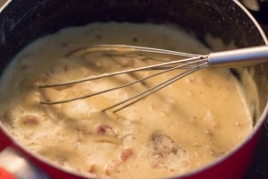
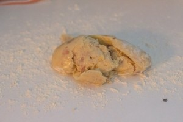
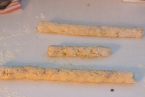
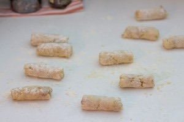
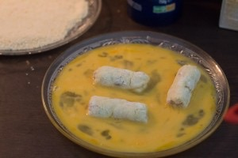
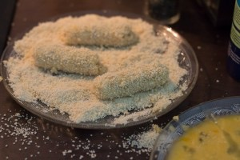
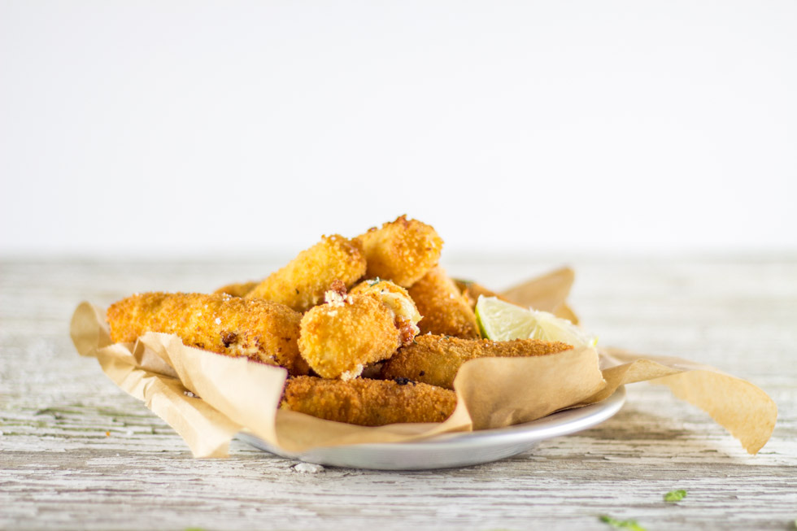

Croquetas au jambon Serrano

Hola que tal? Aujourd’hui on se retrouve avec une recette de tapas espagnoles (vous l’aurez compris^^) et pas n’importe lesquelles puisqu’il s’agit de la recette des croquetas au jambon Serrano (ou croquettes en Français mais là de suite ça fait moins « Olé^^ »)
Décidément j’ai du mal à me défaire de cet été et pourtant je n’ai pas vraiment le choix notamment avec ce vent qui souffle dehors (qui couche les arbres, fait tomber les poubelles et les canapés de jardins dans la piscine) et la pluie qui est tombée ces derniers jours… Heureusement, l’apéro n’est pas réservé qu’aux mois ensoleillés de l’année sinon ce serait bien triste. Ce week-end les examens de mon chéri seront terminés (du moins les écrits) et je pense que l’on va bien en profiter pour décompresser un peu car ces derniers mois ont été un peu durs pour tous les deux alors ça va nous faire du bien de nous retrouver un peu^^. Pour décompresser il nous en faut peu et des petites tapas sont les bienvenues au programme du week-end (entre autres!!).
Les croquetas sont de loin mes tapas favorites. Celles au jambon Serrano sont les plus typiques et font partie de ces bouchées apéritives que l’on trouve sur les comptoirs dans les bars espagnols (on les appelle d’ailleurs « les tapas de comptoirs ») et je pense que si on me proposait de passer ma vie adossée à l’un de ces comptoirs dans ce brouhaha « muy alegre » je ne dirais pas non et pour tout vous dire ça me manque un peu. J’adore la vie que l’on y trouve, cette ambiance chaleureuse, les gens bruyants, les rires, les sourires et les nuits interminables que l’on peut y passer.
La préparation des croquettes est assez simple car il s’agit tout bêtement d’une base faite à partir de sauce béchamel dans laquelle est alors incorporé soit du jambon comme dans notre recette d’aujourd’hui, soit du poisson ou encore des petits légumes, le tout pané puis frits dans une grande quantité d’huile.
Mouais mouais plutôt calorique tout ça me direz-vous mais bon de temps en temps (ou presque tout le temps) ça fait quand même sacrément du bien de se faire plaisir puis surtout quand le tout est préparé à la maison, c’est encore mille fois meilleur!
Prêt à faire un tour avec moi dans les bars Espagnols? Si oui la recette des croquetas au jambon est juste en dessous 😉
Ingrédients
- Lait - 500ml
- Farine - 60g
- Noix de muscade
- Huile d'olive - 50g
- Jambon Serrano - entre 80 et 120g
- Ail - 1 gousse
- Bouillon de poule ou de légumes - 1
- Oeufs - 2 gros oeufs
- Chapelure ou biscottes ecrasées
- Farine
- Huile de friture
Instructions
- Éplucher la gousse d'ail
- Couper le jambon très très finement
- Verser l'huile d'olive dans un grand faitout ou dans une grande casserole
- Ajouter l'ail écrasé et le jambon
- Laisser dorer (environ 1 à 2 minutes) et ajouter le bouillon Personnellement j'utilise le bouillon "cœur de volaille dégraissé" de chez Maggi que je pense vous pouvez trouver un peu partout et il fond littéralement dans la casserole
- Mélanger bien
- Ajouter la farine
- Mélanger jusqu'à ce que le mélange commence à se décoller de la casserole
- Verser le lait petit à petit sans cesser de remuer
- Ajouter la noix de muscade du poivre noir et une pincée de sel
- Faire cuire jusqu'à ce que la crème soit suffisamment épaisse
- Placer au frais une bonne heure
- Saupoudrer votre plan de travail de farine (n'hésitez pas à en mettre pas mal)
- Préparer 3 assiettes (plates) pour la panure - une contenant les œufs battus, une autre la chapelure et une autre de la farine
- Sortir la pâte du frigo
- Former un boudin (allez y très doucement)
- Et découper ce "gros" boudins en plusieurs petits boudins
- Rouler les boudins successivement dans les œufs battus puis dans la farine et enfin dans la chapelure
- Faire frire les croquetas dans de l'huile bien chaude (elle doivent être bien dorées)
- Les sortir de l'huile et les déposer sur du papier absorbant
- Déguster!!







Les tips de la communauté
Croquetas classique très simple et réussie. Texte souligne bien la facilité de préparation malgré apparence complexe. Avec jambon Serrano: succès garanti, rappelle pinchos d'Espagne.
Astuces
- Recette très simple au final et rapide à préparer
- Parfait pour apéritif ou tapa inspirée de Madrid/Espagne